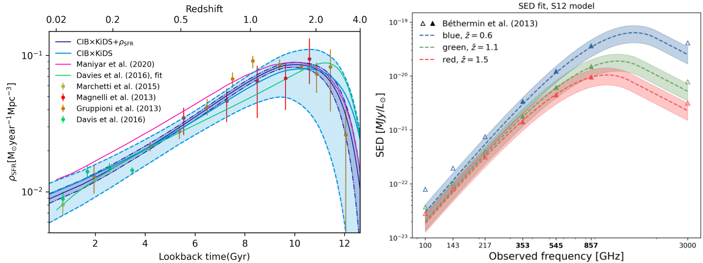

Welcome to my homepage!
My name is Ziang Yan (How to pronounce it?). I'm a postdoctoral fellow at the German Centre for Cosmological Lensing based at Ruhr-Universität Bochum.
Check my resume for my education and working experience. You can find more details on my research projects on My Research page. For a more relaxed introduction to cosmology, please visit the Cosmology in a nutshell page.
Contact me:
Email: yanza21 at astro.ruhr-uni-bochum.de
Office: GAFO 03 / 925 , Ruhr University Bochum
Short resume
Education experience
PhD (2017-2021) in Physics, University of British Columbia, Vancouver, Canada
Supervisors: Prof. Gary Hinshaw and Prof. Ludovic van Waerbeke
Thesis: Probing the universe with multiple large-scale structure tracers
MSc (2015-2017) in Astronomy, University of British Columbia, Vancouver, Canada
Supervisor: Prof. Gary Hinshaw
BSc (2011-2015) in Physics, Tsinghua University, Beijing, China
Supervisor: Prof. Charling Tao
Membership
Dark Energy Science Collaboration (DESC): in-kind contributor(2021-)
Kilo-degree Survey (KiDS): member(2020-), infrastructure contributor(2024-)
Canada-France Imaging Survey (CFIS): member(2021-)
My detailed resume: Resume
My Research
Overview
I'm interested in cross-analyzing different "tracers" of the large-scale structure (LSS) to understand different physical processes across various scales. In addition, I'm developing tools and pipelines , and implementing machine learning for ongoing and future LSS surveys.
See my publication list in my Google Scholar Profile.
Cross-correlating different LSS tracers
Cosmic star formation history, extragalactic dust properties, and galaxy abundance with galaxy-CIB cross-correlations

(Left panel: cosmic star formation history constrained from KiDS x CIB; right panel: dust SED constrained from unWISE x CIB)
Cosmic Infrared Background (CIB) encodes rich information about cosmic star formation history, extragalactic dust properties, and galaxy abundance. We measured the tomographic cross-correlation between KiDS galaxy maps and Planck CIB maps to constrain cosmic star formation history up to z~1.5. Our results are consistent with previous multiwavelength studies of star formation history.
We further investigated star formation history, dust thermodynamics and galaxy abundance simutaneously by cross-correlating unWISE galaxy maps and CIB. These projects provide a complimentary analyses of galaxy-scale physics using large-scale statistics and will provide more precise constraints with upcoming LSS and CMB surveys.
Publications: arxiv: 2204.01649, arxiv: 2310.10848
Talk: online talk at Cosmology From Home workshop
Github repo: profiles and tracers for different CIB models
Cosmic thermal history and baryonic feedback with KiDS-tSZ cross-correlations
(Bias-weighted average electron pressure constrained by KiDS x tSZ)
The thermal Sunyaev-Zeldovich (tSZ) effect, originated from intergalactic gas, encodes information about electron pressure, temperature, and thermodynamic energy throughout cosmic time. We measured tomographic cross-correlations between KiDS galaxy maps and the Planck tSZ Compton-y map to explore the thermal history of the Universe.
Small-scale baryonic effects will affect the cosmological constraints derived from weak-lensing data. To address this, we analyzed the cross-correlation between KiDS lensing and tSZ signals to study the impact of baryonic effects on these constraints.
Papers: arxiv: 2102.07701, arxiv: 2109.04458
Correcting selection effects for angular galaxy clustering from deep surveys

(Left and middle panels: part of KiDS-Legacy galaxy map and associated organized randoms map; right panel: 2PCF from mock galaxy catalog with data-driven selections)
Deep surveys are subject to complex selection effects from the Milky Way, atmosphere, and the instruments, which leaves a variable depth pattern in the galaxy sample. This pattern, if not corrected, will bias the angular galaxy clustering measurement. In this work, we developed a machine-learning-based method to construct "organized randoms" to mitigate such biases. This approach is model-independent and can accommodate arbitrary selection functions. For KiDS survey, this method can correct a selection-induced bias in (Ωm, b) from 30σ to 0.3σ level. This method can be applied to upcoming deep surveys (such as the LSST with a "Rolling Cadence" survey strategy) to correct selection effects.
Paper: arxiv: 2410.23141
Github repo: the 'tiaogeng' package
Pipeline development for weak lensing cosmology

(Left panel: mean redshift in each SOM cell for a training galaxy set given by cosmoDC2; right panel: true and SOM-calibrated N(z) for a testing set.)
As an in-kind contributor to DESC, I have contributed to developing the Redshift Assessment Infrastructure Layers. I have developed code for photometric realization, spectroscopic selection, and self-organized random calibration of redshift distribution for weak lensing cosmology.
In addition, I'm leading the development of the KiDS 6x2pt measurement pipeline.
Github repo: the 'rail_som' package
Studies on galaxy clusters with hydrodynamical simulation and machine learning
An estimation of galaxy cluster mass with deep learning

We trained a set of convolutional neural networks (CNNs) to estimate galaxy cluster masses using cluster images from the BAHAMAS simulation. Our results demonstrate that CNNs can achieve precise mass predictions from different tracer images, with a mean mass bias of around 1% and a scatter of approximately 17%, outperforming traditional methods. This work highlights the great potential of deep learning in studying galaxy clusters. Additionally, we explored the interpretability of our machine-learning approach.
See this News & Views article written by myself on similar topics.
Paper: arxiv: 2005.11819
Github repo: clustermass_cnn
Probing the mis-centering effect of galaxy clusters

In this work, we fitted the PDF for the offsets of seven observation-motivated galaxy cluster centroids. Our best-fit PDFs can be used to estimate cluster mass and density profiles in real observations. Additionally, we examined the mass dependence of the mean offset and the mass bias estimated from off-centered cluster density profiles.
Paper: arxiv: 1912.06663
Resources
Here, I would like to share some resources that I find useful for conducting research in cosmology and astronomy.
Textbooks and review papers
Introduction to Cosmology by Barbara Ryden: This textbook is an excellent starting book for those new to cosmology. The book very clearly introduces basic concepts and ideas about modern cosmology, and is suitable for advanced undergraduate students in physics and astronomy.
Modern Cosmology by Scott Dodelson and Fabian Schmidt: This book covers more advance topics in cosmology, including perturbation theory of the large-scale structure, CMB anisotropies, CMB polarization etc. The mathematical content is both rigorous and clear. The book is closely tied to practical analyses, especially the last chapter about statistical methods.
Extragalactic Astronomy and Cosmology: An Introduction by Peter Schneider: This book does not delve deeply into mathematics but features numerous figures (many in color) from cutting-edge observations, offering a comprehensive review of a wide range of topics in extragalactic astronomy and cosmology.
Galaxy Formation and Evolution by Houjun Mo, Frank van den Bosch, Simon White : The covered topics of this book is similar to Extragalactic Astronomy and Cosmology, but it provides a more thorough introduction to the underlying theories. It is an excellent reference book and I particularly enjoyed the chapter on the halo model.
Cosmology by Steven Weinberg : Like other books by Weinberg, this book goes solid mathematics while clearly discusses the underlying physics picture. This unique book provides deep understanding of theoretical cosmology.
Review papers on weak lensing cosmology: Weak Lensing for Precision Cosmology by Rachel Mandelbaum, Weak gravitational lensing by Matthias Bartelmann and Matteo Maturi.
Useful tools
Taotie is a great collection of resources for astronomers, including tutorials, database, programming, career development, and so on.
I'll list some tools that I find useful for doing research in observational cosmology. I am using them for my own research.
RAIL: Redshift Assessment Infrastructure Layers: a flexible open-source software library providing tools to produce at-scale photometric redshift data products.
Core Cosmology Library: a public standardized library of routines to calculate basic observables used in cosmology.
NaMaster: a python package to compute the angular power spectrum of masked fields with arbitrary spin using the so-called pseudo-Cl formalism.
TreeCorr: a python package a package for efficiently computing 2-point and 3-point correlation functions.
OneCovariance: a python package to calculate covariance matrices for observables of photometric large-scale structure surveys.
Other books about astronomy and physics
I enjoy reading about the history of physics and astronomy. Learning those histories not only satisfies my curiosity about my own field, but also helps me understand how new ideas emerge and develop to discoveries. I believe this is helpful for my research. Here are some books I find interesting:
The Cosmic Century by Malcolm S. Longair: This book introduces the major discoveries across a wide range of astrophysics topics during the 20th century. With detailed explanations of the theoretical background and observational results, it effectively links to the most recent research.
Cosmology’s Century by P. J. E. Peebles: This book introduces the history of modern cosmology, especially the recent studies on the large-scale structures. Many of the contents are based on the author's own research experience. The book also demonstrated the author's insights on the current status and future of cosmology.
The Dreams That Stuff Is Made Of edited by Stephen Hawking: This book is a collection of early papers, lectures and speeches on quantum physics. It compiles the essential works of scientists who sparked the paradigm shift that transformed our understanding of the world.
Going Big: A Scientist's Guide to Large Projects and Collaborations by Christopher W. Stubbs: Astronomers today often work on large projects and collaborations. This book introduces how those large collaboration operates. For early-stage researchers, this book provides a useful guide on how to effectively contribute to a large collaboration.
Cosmology in a nutshell
Some history
In Chinese, 'the Universe' is called 'Yu Zhou (宇宙)'. As an ancient Chinese philosopher Shi Jiao (390 B.C-330 B.C) put it:
四方上下曰‘宇’，往古来今曰‘宙’。
——尸佼《尸子》
Heaven, earth and the four quadrants (together) are called ‘yu’(宇); from the past to the present is called ‘zhou’(宙)'.
——Shizi by Shi Jiao
This is a perfect definition of "the Universe": the whole space and time. Cosmology is the study on the origin, evolution, and eventual fate of the Universe.Human beings started to think about the Universe since prehistory but for most of time, cosmology belonged to philosophy. Ancient philosophers from different civilizations developed different models about the Universe based on imagination, speculation and limited observational evidence. For example, the ancient Chinese pictured the Universe as an egg and the earth as the yolk; the ancient Greeks believed that our earth was fixed in the Universe surrounded by a concentric celestial sphere of planets and stars; and ancient Indian philosophers described the Universe as ‘Turtles all the way down (cosmic turtle)’.
In 1917, Einstein published “Cosmological Considerations in the General Theory of Relativity.” that describes the geometric structure of the Universe using his new theory of spacetime: general relativity . This work marks the birth of physical cosmology . In 1929, Edwin Hubble discovered that galaxies are moving away from us and the further away they are, the faster they are moving. This motivates the idea of the “Big Bang Theory” which describes how the Universe expands from a very dense and hot state since about 14 billion years ago.
In addition to the Hubble expansion, another key evidence of the Big Bang Theory is the Cosmic Microwave Background (CMB) discovered in 1965. The CMB is the the afterglow of the Big Bang, and is therefore the earliest light that we can observe. CMB contains a wealth of information about the early Universe. CMB observations have provided the most precise estimates of the Universe's age, composition, and geometry.
(An artist’s depiction of the standard model of cosmology. Credit: BICEP2 COLLABORATION/CERN/NASA)
The large-scale structure of the Universe
The Big Bang cosmology assumes that the Universe is statistically homogeneous and isotropic on large scales. However, the Universe is less uniform on small scales. Galaxies cluster together due to gravity, forming galaxy clusters; galaxy clusters are connected by filaments creating the 'cosmic web'. Some regions of space remain empty, known as voids. Collectively, these patterns constitute the large-scale structure (LSS) of the Universe.
The evolution of LSS evolution is primarily governed by gravity from invisible dark matter, but we can map the LSS by observing different 'tracers', including galaxy distribution, weak gravitational lensing, Sunyaev–Zeldovich effect , X-ray astronomy , Cosmic infrared background , CMB lensing, etc. Each tracer is sensitive to different physical processes on different scales.
Observations on the LSS has been growing since the 20th century. Large-scale surveys are observing tracers from stellar, dust, and gas components of millions of galaxies, while CMB surveys have mapped the anisotropic microwave sky originated from the early Universe. With these data, we are gaining more and more knowledge on different aspects of the Universe.
(The large-scale structure of the Universe mapped by DESI. Credit: Claire Lamman/DESI collaboration Image)
The biggest puzzles of cosmology
Observations show that ordinary matter constitutes less than 20% of the mass content of our Universe, with the remainder being invisible dark matter. Moreover, it has been discovered that the expansion of the Universe is accelerating, indicating the presence of mysterious dark energy that drives this acceleration. The natures of dark matter and dark energy are still barely known.

(Content of the universe. Image from here)
In 1980s, cosmological inflation was proposed to address several puzzles in standard cosmology. Inflation refers to a dramatic period of accelerated expansion in the early Universe, occurring when it was 10-36 seconds old. During inflation, the Universe expanded by a factor of 1026 in 10-32 seconds. Inflation is thought to contain the seeds of the large-scale structure and the CMB anisotropies that we observe today. However, there is no direct evidence to prove its existence yet, nor do we understand mechanisms behind it.
Dark matter, dark energy and inflation are three major puzzles of modern cosmology. Besides, there are many unresolved issues across various aspects of the Universe. Cosmologists are trying to address them by pointing telecsopes deep in the sky to collect data from a vast number of distant galaxies and the CMB. The curiosity to these puzzles, improvement of observational techniques and the accumulation of high-quality data are the driving force that makes cosmology a lively field of modern physics and astronomy.
Why do I love cosmology?
My interest in cosmology naturally stems from my curiosity on how our Universe comes into being, but what truely motivates me to be a cosmologits is the way we explore it. The theories we use to discribe the Universe are rooted in the laws of physics and mathematics that comes from labs, pens and scratchs. It is truely remarkable that the ideas from the tiny human brain on from a small blue planet can be used to understand the entire Universe. As Einstein put it: "The most incomprehensible thing about the Universe is that it is comprehensible."
Astronomy is based on observations, meaning that astronomers cannot design and control the physical process as experimental physicists do in their labs. Instead, they observe the sky as it is. Unlike other fields in astronomy, we cosmologists do not focus on certain objects, but the Universe as a whole. We survey the sky and do 'demography' on millions of galaxies. I feel it fancinating that we can extract information about the birth, age, content, and fate of the Universe from seemingly stochastic data.
More about me
About my name
For the prononciation, check my Namecoach profile for a record.
My family name Yan (颜) is listed 143rd on the Hundred Family Surnames. It is the 112th most common surname in the China. A total of around 1.7 million people bear the name, mostly in the regions of Hunan, Guangxi and Hubei.
My first name Ziang（子昂）is from a famous Chinese poet Chen Ziang. It has two characters, of which Zi （子）means kid and Ang（昂）means 'to raise ones head'. So I'm a 'kid raising my head', which coincidently agrees with my current job as an astronomer.
My Hometown
I was born and raised in Xinhuang county of Hunan province in the middle-south of China. It is a beautiful town surrounded by rivers and mountains. My mothertongue is Southwestern Mandarin. We enjoy very spicy food.

(A picture of my hometown. The bridge in the distance is the traditional "Wind and Rain bridge" of my hometown. Photo taken by my friend.)
My life outside science
I enjoy classical music from a wide range of composers, spanning from the Baroque era to the late Romantic period, and I also play the violin for myself. Classical music helps me concentrate and provides peace, inspiration, and emotional support. By the way, the piece that I find best match my research is Symphony No.3 in d minor by Gustav Mahler —— a masterpiece with the vastness and complexity that remind me of the Universe. Click here for a performance by the Lucerne Festival Orchestra conducted by Claudio Abbado.
In my leisure time, I like to read books on the history of science, entomology, and linguistics. I also play table tennis, write traditional Chinese poems, go hiking, and watch anime.
You can find me on Facebook and Twitter. Let's chat about Bach, Beethoven, Miyazaki Hayao, and of course, the Universe.